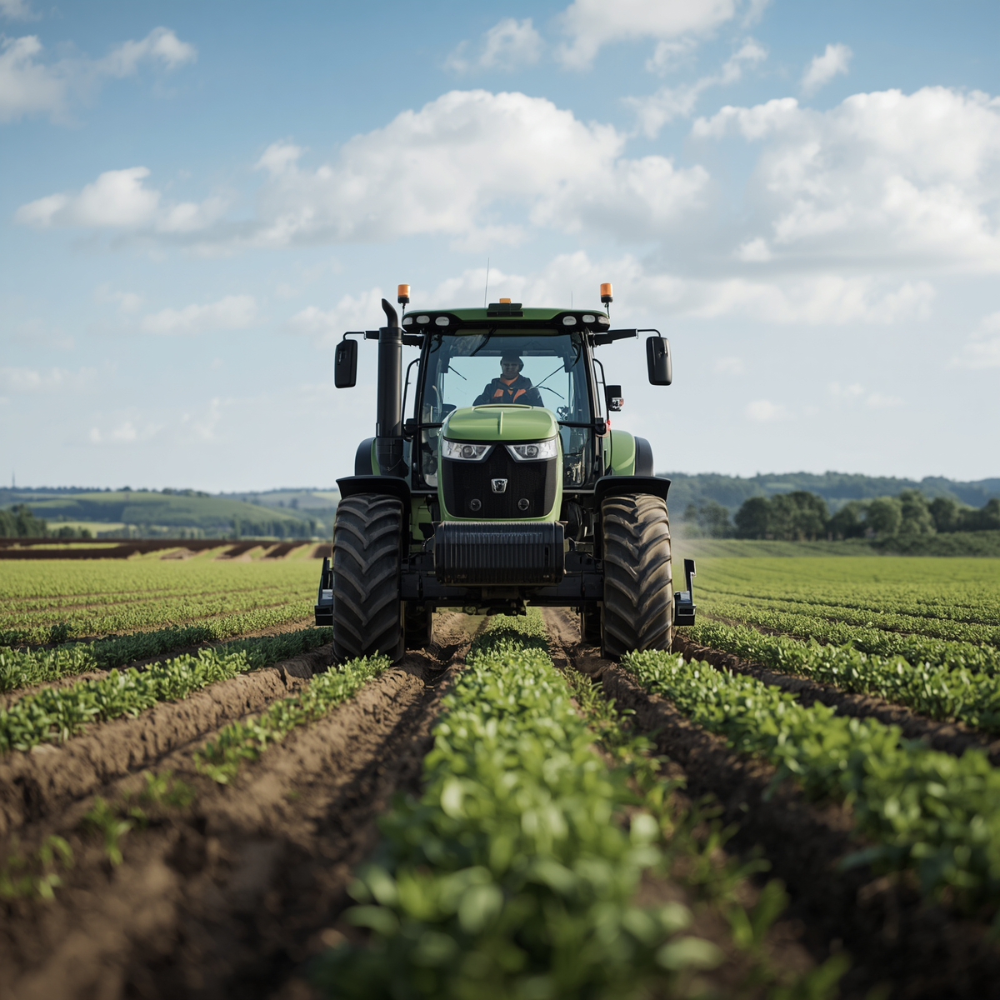

O Ouro da Inteligência no Campo
A agricultura sustentável ganha espaço no debate global em um momento de pressão sobre custos, segurança alimentar, energia e mudanças climáticas. Esse cenário coloca o Brasil em posição de destaque por unir produtividade, inovação e capacidade de adaptação no campo.
O avanço de tecnologias baseadas no uso de microrganismos nas lavouras, como o trabalho premiado da microbiologista Mariangela Hungria com bactérias que capturam nitrogênio do ar, mostra como o país lidera a transição para reduzir a dependência de fertilizantes químicos industriais.

Quais os Principais Benefícios da Inteligência Artificial no Campo?
A Inteligência Artificial (IA) promete revolucionar o setor agrícola. Ela permite a otimização de recursos naturais finitos, automatização de processos complexos e o aumento da resiliência frente às adversidades climáticas.
Sistemas de irrigação inteligentes e sensores monitoram constantemente as condições do solo e das plantas, ajustando a água de acordo com a necessidade real. Isso reduz o desperdício e melhora drasticamente a saúde das culturas.
Drones equipados com câmeras e sensores multiespectrais capturam imagens processadas por algoritmos de IA. Isso permite detectar precocemente ervas daninhas, pragas, falhas de plantio e aplicar insumos em taxa variável com precisão cirúrgica.

A análise de dados climáticos e históricos de produção via IA permite prever o rendimento das colheitas, antecipar eventos climáticos extremos e mitigar perdas financeiras e ambientais antes mesmo de acontecerem.
Tratores e maquinários autônomos equipados com GPS e sensores realizam tarefas pesadas como plantio e pulverização sem interrupções, otimizando o tempo operacional e reduzindo a fadiga da mão de obra intensiva.
A aplicação precisa reduz o estresse da planta. Além disso, a IA possibilita a rastreabilidade completa de cada etapa da cadeia de suprimentos, garantindo transparência total da fazenda até a mesa do consumidor.